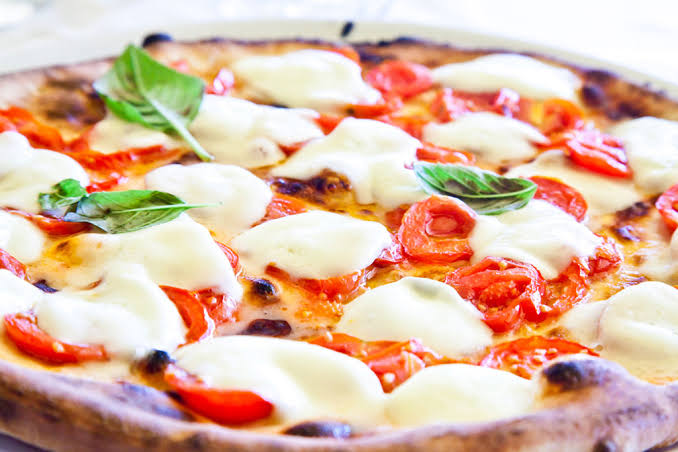
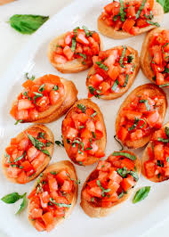

Italy (Italian: Italia [iˈtaːlja] (About this soundlisten)), officially the Italian Republic (Italian: Repubblica Italiana [reˈpubblika itaˈljaːna]), is a European country consisting of a peninsula delimited by the Alcps and surrounded by several islands. Italy is located in south- central Europe,and it is also considered a part of western Europe. The country covers a total area of 301,340 km2 (116,350 sq mi) and shares land borders with France, Switzerland, Austria, Slovenia, and the enclaved microstates of Vatican City and San Marino. Italy has a territorial exclave in Switzerland (Campione) and a maritime exclave in the unisian Sea (Lampedusa). With around 60 million inhabitants, Italy is the fourth-most populous member state of the European Union.
Italian cuisine has a tradition of dishes based on wheat products (such as bread and pasta), vegetables, cheese, fish, and meat, usually prepared in such a manner as to preserve their ingredients' natural qualities, appearance and taste.This kind of cuisine puts a stress on lightness and healthy nutrition with natural unprocessed foods, and tends to vary greatly not only with the seasons but also between the various regions of the country: mountainous regions have dishes rich in proteins, and prefer meat, butter, and cheese, while seaside regions have dishes rich in vegetables and fish. In this way, the cuisine is born of the people, the territory and the seasons and is not pulled out of nowhere for no rhyme or reason.

Caprese salad (Italian: insalata caprese [insaˈlaːta kaˈpreːze]; 'Capri salad')[1] is a simple Italian salad, made of sliced fresh mozzarella, tomatoes, and sweet basil, seasoned with salt and olive oil, it's occasionall paired with arugula; it is usually arranged on a plate in restaurant practice. [2][3] Like pizza Margherita, it features the colours of the Italian flag: greenite, and red. In Italy, it is usually served as an antipasto (starter), not a contorno (side dish) and may be eaten any time of day.
.jpg)
Panzanella [pantsaˈnɛlla] or panmolle [pamˈmɔlle] is a Tuscan chopped salad of soaked stale bread, onions and tomatoes that is popular in the summer. It often includes cucumbers, sometimes basil and is dressed with olive oil and vinegar.Panzanella was based on onions, not tomatoes, until the 20th century. Modern panzanella is generally made of stale bread soaked in water and squeezed dry, red onions, tomatoes, olive oil, vinegar, salt, and pepper. Cucumbers and basil are often added.
Bruschettais an antipasto (starter dish) from Italy consisting of grilled bread rubbed with garlic and topped with olive oil and salt. Variations may include toppings of tomato, vegetables, beans, cured meat, or cheese. A popular dish is bruschetta with tomatoes; one recipe popular outside Italy involves basil, fresh tomato, garlic and onion or mozzarella. Bruschetta is usually served as a snack or appetizer. In some countries, the prepared topping is marketed as bruschetta. In Italy, bruschetta is often prepared using a brustolina grill. In the Abruzzo region of Italy a variation of bruschetta made with a salame called ventricina is served. Raw pork products and spices encased in pig bladder are aged and the paste spread on open slices of bread which are sometimes grilled. The dish was developed as a way of salvaging bread that was going stale. In Tuscany it is called fettunta and it is usually served without toppings, especially in November, to taste the first oil of the season.
Pasta with basic Tomato and Basil Sauce. This is the most basic and simplest cooked pasta sauce, hence it is the benchmark of a good Italian home cook.